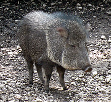

En Oaxaca los animales en peligro de extincion son muchos igual que en todas partes del mundo y algunos de ellos son los siguientes animales tapir, salamanquesa, puerco espin tropical, nauyaca, y cecilia oaxaqueña en la selva seca de oaxaca estan los animales que son los musarañas, armadillo, mapaches, urraca, calandria, colibri, chachalaca, lince, conejo, puma y culebra
